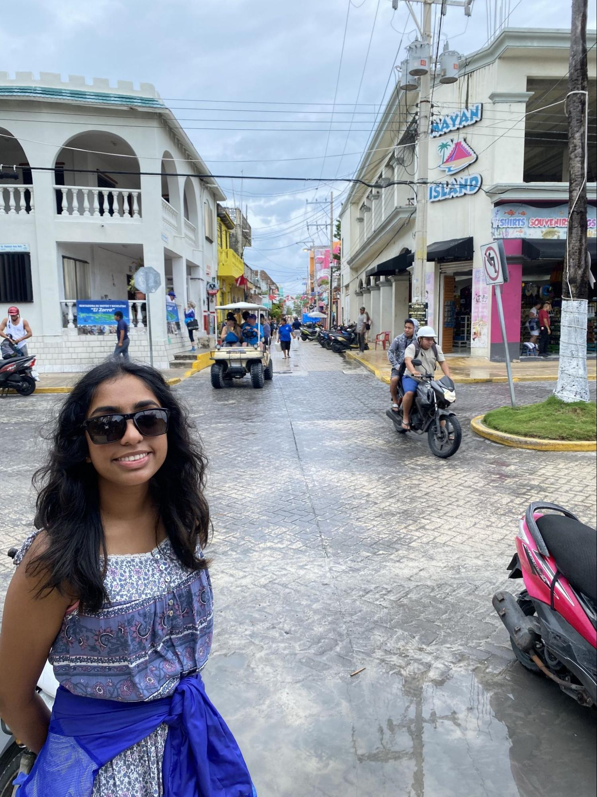
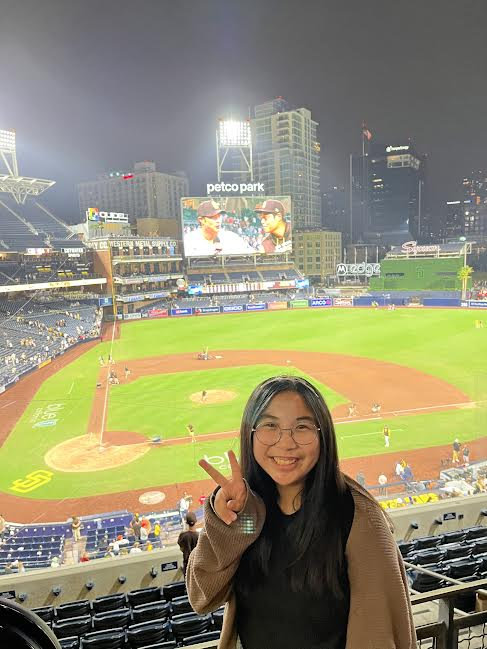

Our Mission
Our mission at Packs of Love is to help underprivileged youth in San Diego gain access to new opportunities and build a better future for themselves by providing them with educational STEM kits and necessity bags.
Officers

Ila Gowda, Founder & President
Ila Gowda is a junior attending Rancho Bernardo High School. She first discovered her passion for STEM while competing in First Lego League and for her school’s Science Olympiad team. She is passionate about inspiring the next generation of youth in her community to pursue the field as well through her roles of President of Women in STEM and Coding4Kidz. She is involved in her school's FRC team as an electrical lead and hopes to pursue engineering in the future. Ila founded Packs of Love to help bridge the gap in the underrepresented STEAM community and help provide resources to underserved women. In her free time she loves to play tennis, create short films, and listen to music.
Abby Tran, Vice President
Abby Tran is currently a high school junior attending Rancho Bernardo High School. She brings strong leadership experience through her role as vice president of a school club dedicated to educating and providing learning opportunities about STEM for youth in her community. She has extensive experience in community service from her annual volunteering at the San Diego Vietnamese Lions Club Health Fairs and from her accumulation of over 100 service hours from events held by clubs at her school.
